Project 1: Rasterizer
CS 184: Computer Graphics and Imaging, Spring 2023
Project 1: Rasterizer
Overview
In this assignment, we implemented a rasterizer capable of rendering simplified SVG (Scalable Vector Graphics) files. This included rendering triangles in various forms (single-colored, interpolated, and textured), a generic sampling approach capable of supersampling at arbitrary rates via nearest, bilinear, and summed area tables sampling methods, and level sampling with mipmaps. At a higher level, we compared different approaches of minimizing aliases in our renderings. Progressing from single-colored triangles to sophisticated mipmap-based texturing techniques and observing the differences between the approaches taught us a lot about the rasterization process and improved our appreciation of it. Most of all, we enjoyed doing research on and implementing sampling via Summed Area Tables. Overall, we found the process rewarding, as unlike most programming assignments, this gave us the immediate satisfaction of an appealing image on successful completion of a step.
Section I: Rasterization
Part 1: Rasterizing single-color triangles
Algorithm and Data Structures
Our algorithm for rasterizing a triangle begins with determining which pixels to sample. Attempting to adhere to the Single Responsibility Principle (a pattern you’ll notice throughout), we abstracted this into a minimal class, BoundingBox. Once the bounds are obtained, we traverse each point within. For each, we check if it’s inside or on the edge of the triangle. We use the three-line test for this computation.
If the check passes, we set the framebuffer entry associated with the pixel to the specified color parameter. Here again we adhere to the Single Responsibility Principle in two ways. First, the act of sampling a pixel has been abstracted into the PixelSampler class. This is a closure that is created before we traverse the points and contains the information necessary to sample all points witin a pixel correctly. It’s behavior importantly differs depending on the sampling rate. It will be explained in greater detail later.
Second, we recognized that rasterizing single-color triangles differs from the more complicated cases only in how the color is obtained. For this reason, we abstracted the main implementation for all triangles into a private method, rasterize_triangle(). It’s signature is below.
template <ColorFunction ColorFn>
void rasterize_triangle_(const detail::Triangle &triangle, ColorFn &&color_fn);That is, the implementation is identical for each triangle type except the color computation, which is a function provided as a parameter. Note that ColorFunction is a C++20 concept defined as follows.
template <typename ColorFn>
concept ColorFunction = std::is_invocable_r_v<Color, ColorFn, float, float>;For single-color triangles, we simply pass a lambda that always returns a single color, seen below. These functions become more interesting in later parts.
void RasterizerImp::rasterize_triangle(float x0, float y0, float x1, float y1,
float x2, float y2, Color color) {
const detail::Triangle triangle{
detail::Pointf{x0, y0}, detail::Pointf{x1, y1}, detail::Pointf{x2, y2}};
rasterize_triangle_(triangle, [color](auto, auto) { return color; });
}Rendering Result
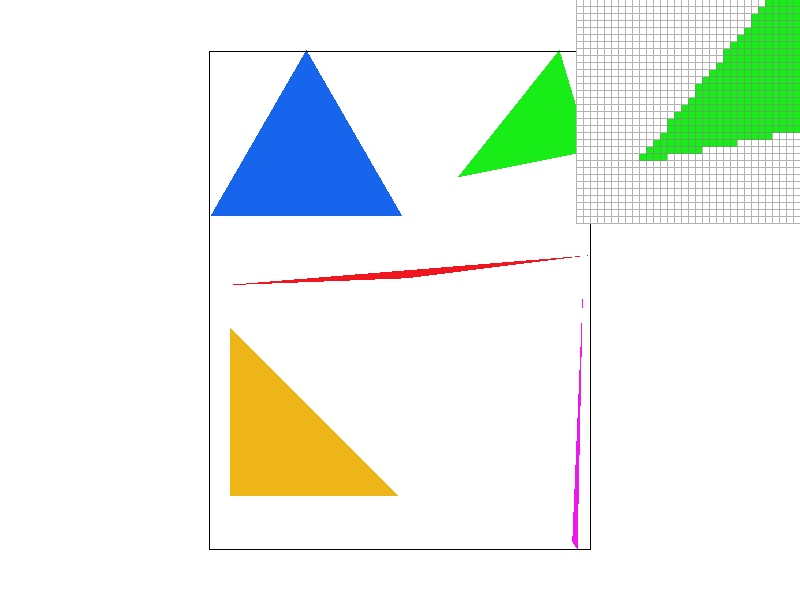
basic/test4.svg Note the presence of significant jaggies at this sampling rate.Extra Credit: An Optimization Attempt
We noted that when a triangle is sampled, each element in the sample framebuffer is only modified once. This means we can do this operation in parallel without risk of data races. We attempted this using the parallel version of std::for_each from <algorithm> instead of manual loops. The format of this is seen below.
std::for_each(
std::execution::par, std::begin(rows), std::end(rows), [&](int i) {
/* bounds checking */
std::for_each(
std::execution::par, std::begin(cols), std::end(cols), [&](int j) {
/* bounds checking */
/* sample the pixel associated with (i, j) */
});
});However, the improvements observed were minimal. Testing on the svg/hardcore images, we observed an average of 0.0173571s per triangle with the optimization and an average of 0.0177227s per triangle without the optimization, i.e., a measly ~2% improvement – though it was observed consistently. Note that this average includes all sampling rates (1, 4, 9, 16), which are equally weighed.
Part 2: Antialiasing triangles
Algorithm and Data Structures
In this step, the sample buffer grows in complexity. It no longer maintains a one-to-one correspondence with the frame buffer, but instead contains a variable number of colors for each pixel (dependent on the sampling rate). For this reason, we abstracted the sample buffer into its own class, ColorBuffer. This was done primarily to avoid duplicate code (i.e., the arithmetic to calculate the correct index) and recalculating the number of columns in the frame buffer.
class ColorBuffer {
public:
[[nodiscard]] const Color &color(std::size_t x, std::size_t y) const;
void set_color(std::size_t x, std::size_t y, Color c);
void fill(Color c);
void resize(std::size_t width, std::size_t height);
private:
std::vector<Color> buf_;
std::size_t cols_;
};With this, the sampling procedure proceeds as follows. We first translate the provided coordinates of the triangle to their sample buffer equivalents. This is done by multiplying each coordinate by the square root of the sample rate. We then use this as a starting point to obtain all of the sampling points. The algorithm is identical to the one used in the previous section, and is found in PixelSampler, which will now be described.
PixelSampler is a closure, as mentioned previously, that stores all information needed to obtain the color of a point given the color buffer and position in the sample buffer. It importantly contains an initial offset and step. The algorithm starts at the initial offset (offset in both dimension) and proceeds in steps of the stored size, moving row by row until all sample points have been visited for the pixel. So this task only differs from the previous in the initial offset and step provided. The relation to the sampling rate is given as follows:
\[\text{Initial Offset} = \frac{1}{2\sqrt{\text{Sample Rate}}}\] \[\text{Step} = \frac{1}{\sqrt{\text{Sample Rate}}}\]
PixelSampler is defined below.
template <ColorFunction ColorFn> class PixelSampler {
public:
PixelSampler(const Triangle &t, ColorFn &&color_fn, float init_offset,
float step);
void operator()(ColorBuffer &colors, Pointi spos, Pointf sb_pos) const;
private:
std::reference_wrapper<const Triangle> triangle_;
ColorFn color_fn_;
float init_offset_;
float step_;
};Finally for each sampling point, we compute the barycentric coordinates (\(\alpha\), \(\beta\), \(\gamma\)) with respect to the triangle. Then \(c_0 \alpha + c_1 \beta + c_2 \gamma\) gives the color for the sample point where \(c_1\), \(c_2\), and \(c_3\) are the colors of the triangle. We see this in the lambda provided to rasterize_triangle_() below.
rasterize_triangle_(triangle, [&](float sbx, float sby) {
const auto [alpha, beta, theta] = barycentric_coords(sb_triangle, sbx, sby);
return alpha * c0 + beta * c1 + theta * c2;
});Once this is done for all triangles, we’ve effectively rendered the image at a higher resolution. The last step is to condense the sample buffer into the smaller frame buffer. We do this by
taking the average of all sample buffer points associated with each frame buffer point (pixel). This is done in resolve_framebuffer() and uses a generalized function we wrote, average_region(), which computes the average color for a given rectangle within a ColorBuffer object.
The effect of all this, referred to as supersampling, is the reduction of jaggies. In particular, at points that are a combination of multiple colors (e.g., at the border of a triangle), we no longer need to make a discrete decision between one color or another. Instead, through averaging multiple samples, we can provide smooth transitions between colors (antialiasing the triangles).
Showcase
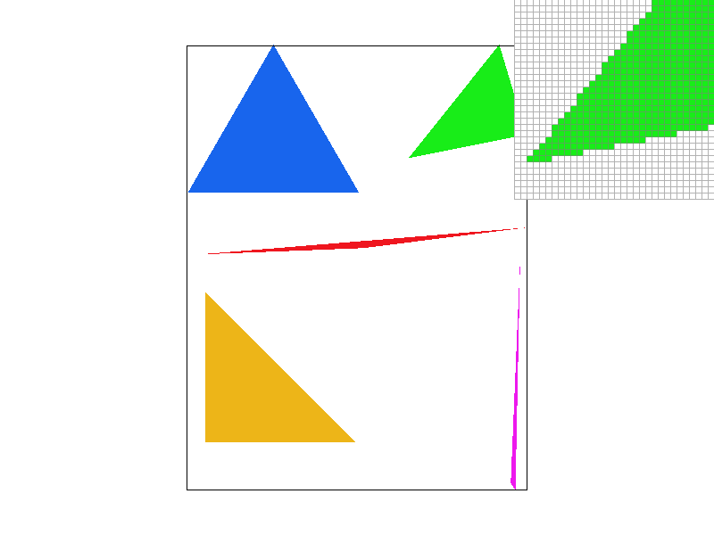
basic/test4.svg at a sampling rate of 1.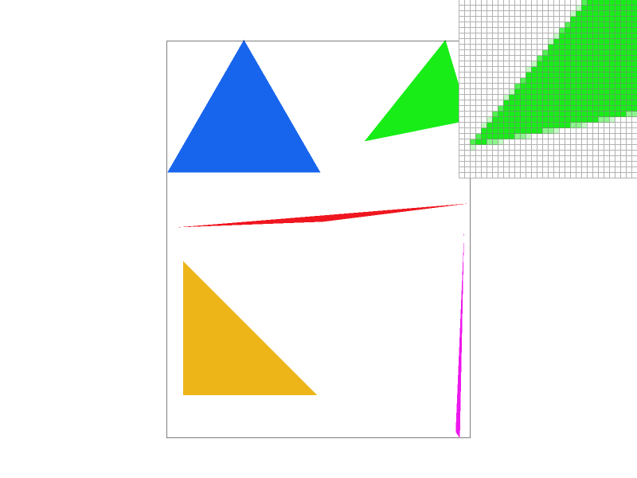
basic/test4.svg at a sampling rate of 4.basic/test4.svg at a sample rate of 9.basic/test4.svg at a sample rate of 16.As the sample rate increases, the triangle edges become smoother. This is because as the sample rate increases, we are iterating through the buffer frame in smaller steps, then taking the average. This results in the boundary having transitionary colors, reducing jaggies.
Part 3: Transforms
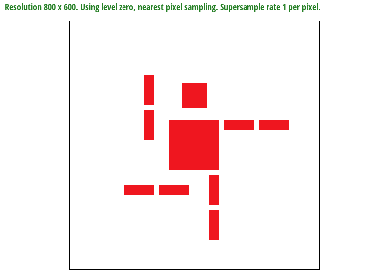
Extra Credit: Additional GUI Controls
We added 10 additional keyboard controls, which are listed below.
| Key | Action |
|---|---|
← |
Rotate image by -1.0 degree. |
→ |
Rotate image by 1.0 degree. |
↑ |
Scale image by 10%. |
↓ |
Scale image by -10%. |
R |
Move image up by 5 pixels. |
F |
Move image down by 5 pixels. |
D |
Move image left by 5 pixels. |
G |
Move image right by 5 pixels |
U |
Undo the most recent transformation. |
X |
Reset all transformations. |
To do this, we kept a list of transformations produced by the user. Each transformation was abstracted into a class, Transform, which held the arguments and type (stored implicitly as a non-type template parameter to the function pointer). Its definition is below.
template <auto TransformFn, typename... Args> class Transform {
public:
Transform(Args... args);
/* Invoke the transformation. */
inline auto operator()() const { return std::apply(TransformFn, args_); }
private:
std::tuple<Args...> args_;
};We then created convenient aliases for each transformation type (translate, scale, rotate), and formed a std::variant (type-safe union) of these types. This type, TransformVariant, is the type stored in the list of transformations.
using TranslateTransform = Transform<&CGL::translate, float, float>;
using ScaleTransform = Transform<&CGL::scale, float, float>;
using RotateTransform = Transform<&CGL::rotate, float>;
using TransformVariant =
std::variant<TranslateTransform, ScaleTransform, RotateTransform>;The list of transformations is stored in the class TransformSet, which supports adding transformations, undoing transformations, and resetting (removing) all transformations.
class TransformSet {
public:
inline void translate(float fx, float fy);
inline void scale(float sx, float sy);
inline void rotate(float deg);
/* Undo the most recent transformation, if any. */
inline void undo() noexcept;
/* Remove all transformations. */
inline void reset() noexcept;
/* Get the result of multiplying all received transformations. */
inline Matrix3x3 get() const;
private:
/* Excluded for brevity. */
};An instance of TransformSet, transform_set, was added as a member variable to DrawRend. To apply the transformations to the image, we simply multiplied the existing tranformation used in DrawRend::redraw() by transform_set.get(), as below1.
const auto transform = ndc_to_screen * svg_to_ndc[current_svg] * transform_set.get();Lastly, we modified DrawRend::keyboard_event(), calling the appropriate TransformSet member function for each of the keys listed above. Note that after each call, we called DrawRend::redraw() to update the image. We also reset the transformation on an image switch.
Extra Credit - Note on the Undo Operation
An opportunity for optimization is found in the TransformSet::undo() function2, which currently pops the most recent transformation and marks the computed matrix “dirty” so that it is recomputed on the next call to TransformSet::get(). This is currently done by multiplying all existing transformations in the list, a wasteful operation. Instead, we could multiply the transformation matrix by the inverse of the most recent transformation (canceling it out) before popping. Better yet, as we know our transformations are only of three forms, we need not have a generalized (likely slower) inverse function. We could have three specialized functions that quickly return the inverse for a given transformation type.
Extra Credit - Showcase
We provided a few screenshots demonstrating the result of the added controls below.
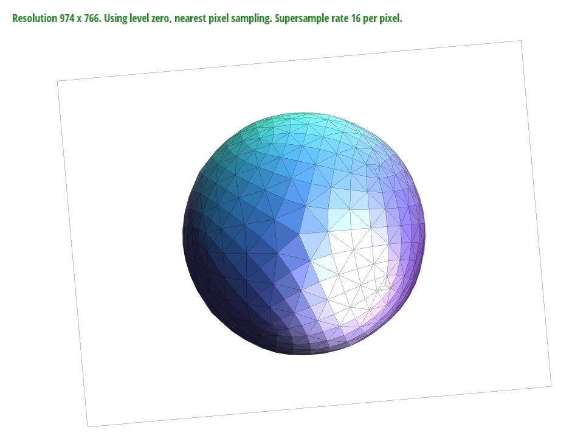
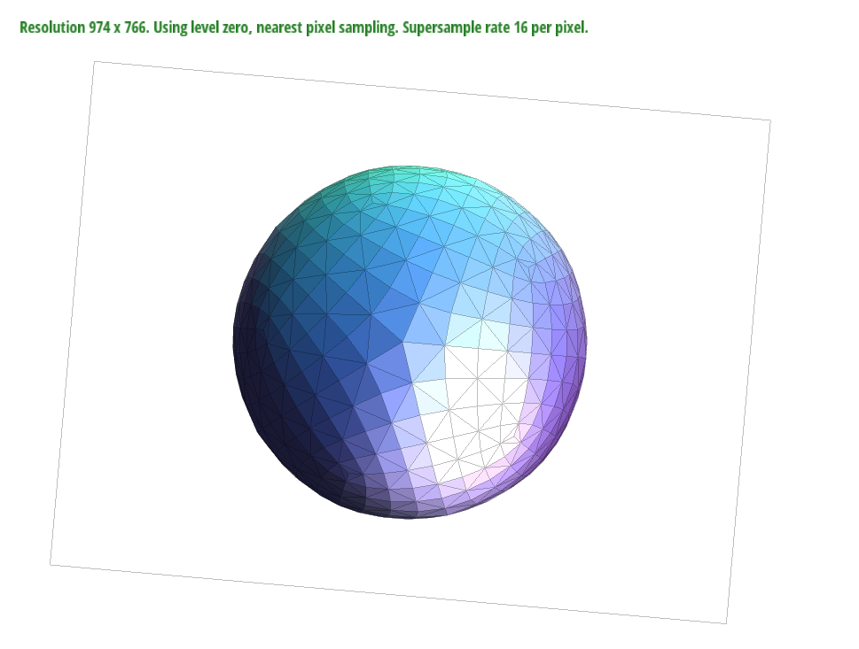
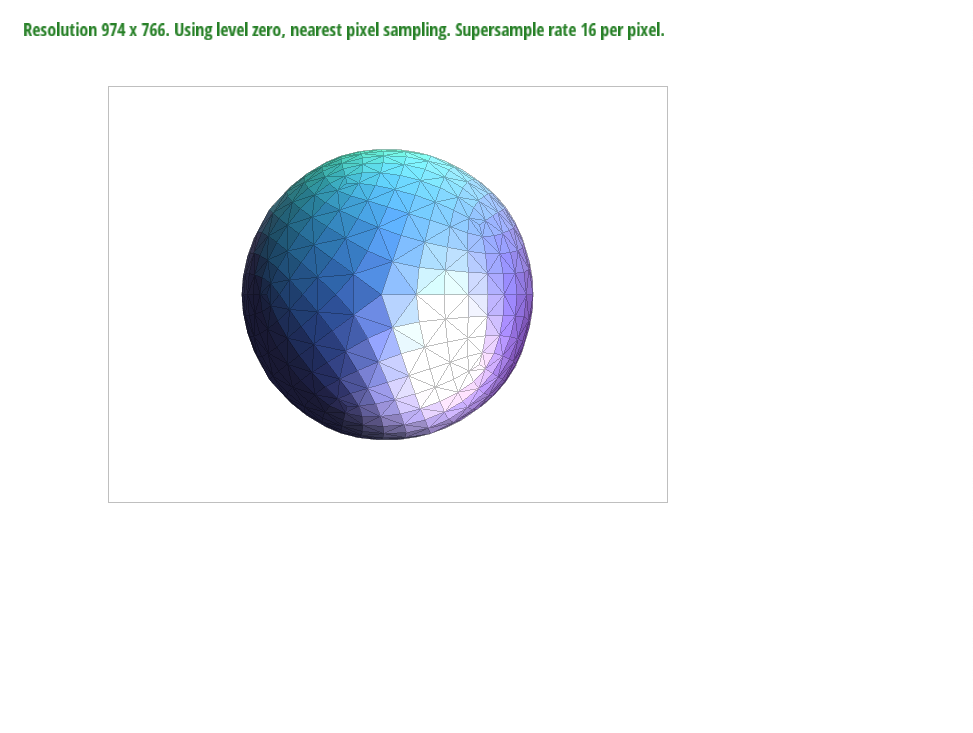
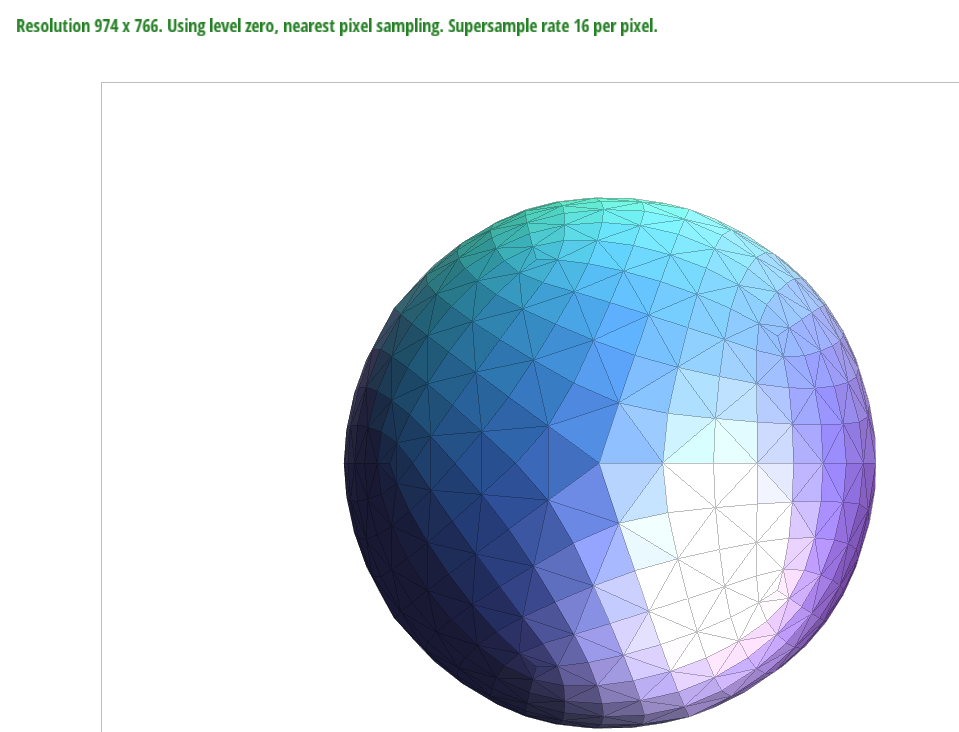
Section II: Sampling
Part 4: Barycentric coordinates
Barycentric coordinates provide us with a way to represent points within a triangle. For example, in the image below, the point \(V\) can be represented by \(\alpha\), \(\beta\), \(\gamma\) where \(\alpha Va + \beta Vb + \gamma Vc = V\).
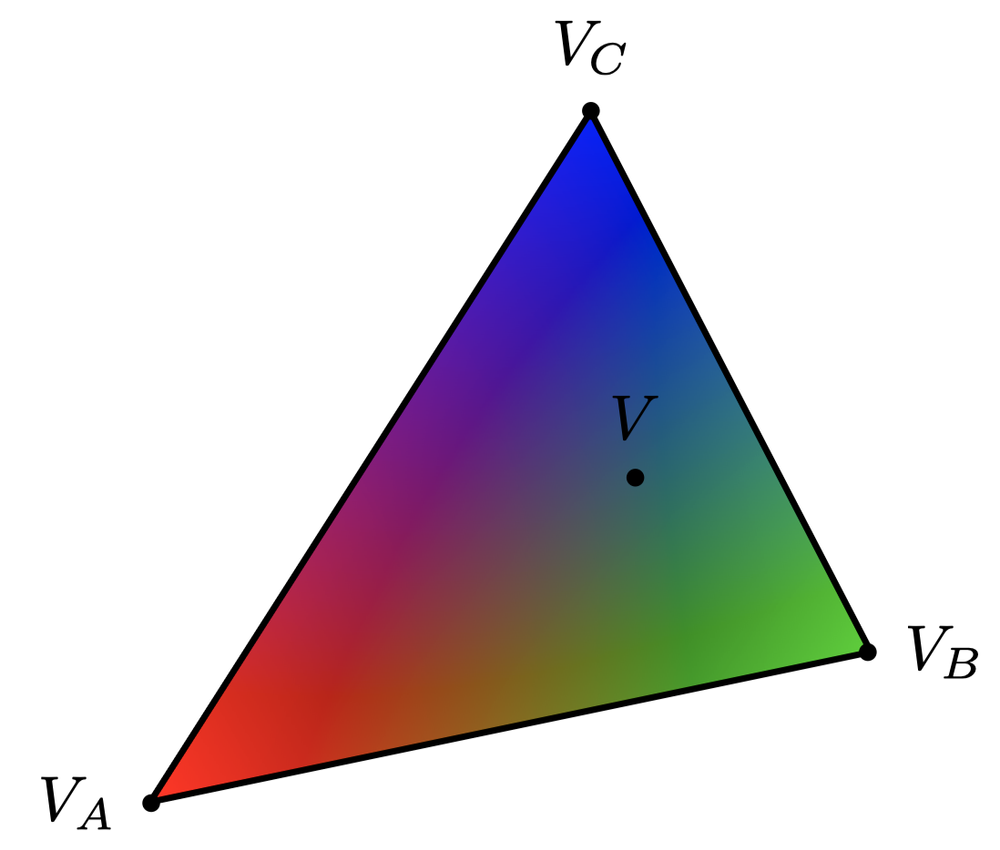
We can think of Barycentric coordinates as being akin to three weighted masses at each of the triangle points such that their center of gravity is the point inside the triangle. This provides us with a general mechanism by which we can handle forces or influences at each of the three points of a triangle (and importantly interpolate between them). In our case, these “forces” are simply colors. But we can extend this to more sophisticated use cases, including in the use of textures.
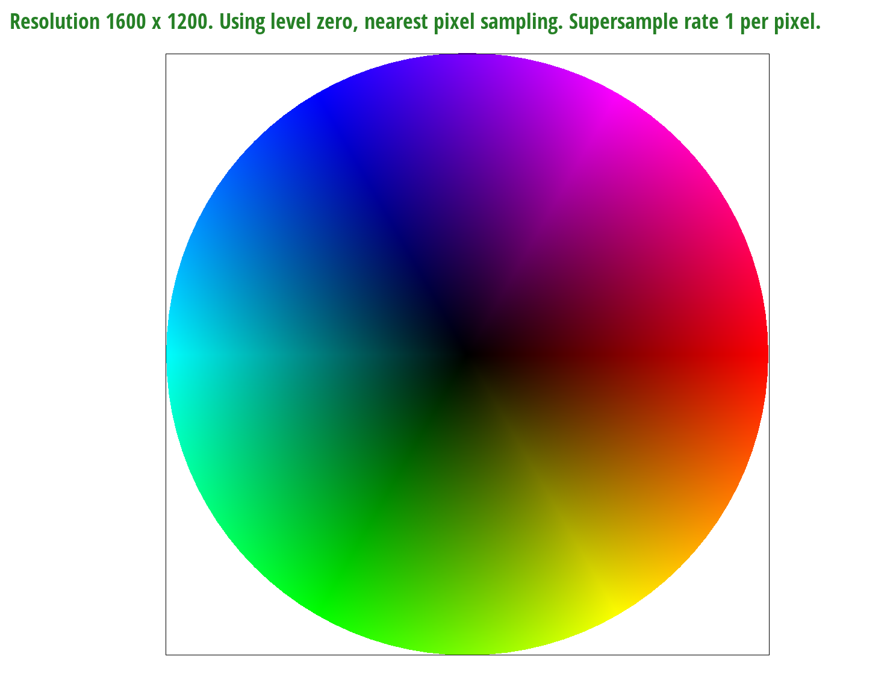
Part 5: “Pixel sampling” for texture mapping
Sampling is the process of getting a value for a pixel from a function, a map, an image, etc. In this case, we are coloring our object based on a given texture mapping. Specifically, given an \((x,y)\) coordinate in our object, we translate it to a \((u,v)\) coordinate in our texture mapping to get the value we need. To implement this, we use first convert the \((x,y)\) coordinate to Barycentric coordinates, and then convert it to the \((u,v)\) coordinate, which is what we used to retrieve the value we want. Finally, we set the color at \((x,y)\) to be this value. However, it might not be the case that \((u,v)\) corresponds exactly to a sample location. That’s why we have two different pixel sampling methods, nearest and bilinear. For nearest pixel sampling, we find the closest sample location to our \((u,v)\) and return the value at that location. For bilinear pixel sampling, we do a bilinear interpolation of the values at the four closest sample locations and return the result.
Using the pixel inspector, we see an obvious difference in the presence of jaggies between nearest pixel sampling and bilinear pixel sampling. Notice how nearest pixel sampling has obvious blocks of distinct colors neighboring each other, while bilinear pixel sampling provides smoother transitions between colors.
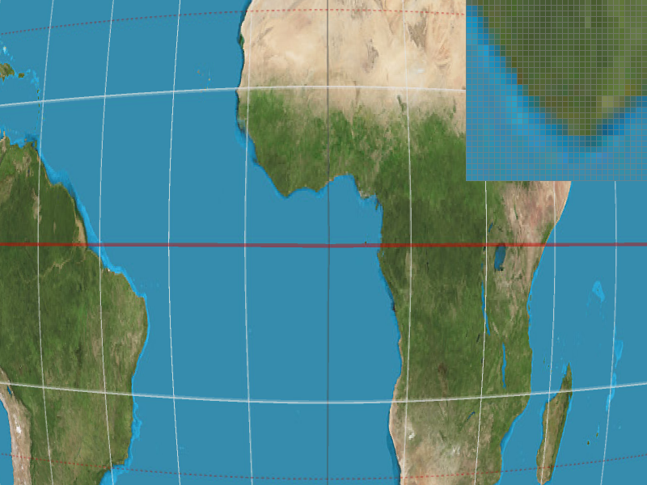
Below we provide a more extreme case – a single line – to make clear the behavior (and benefits) of bilinear sampling. We see at a sampling rate of 1 that nearest pixel sampling has a distinct point at which the line starts and ends, i.e., it is distinctly red or blue, with no in-between, while bilinear sampling has a clear transitionary color. When the sampling rate increases, though, the benefits of bilinear sampling become more subtle.
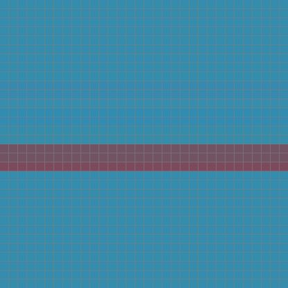
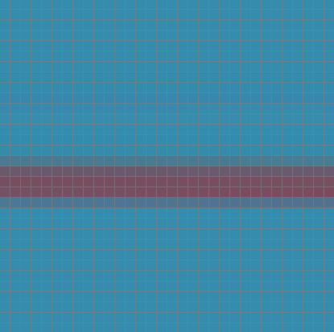
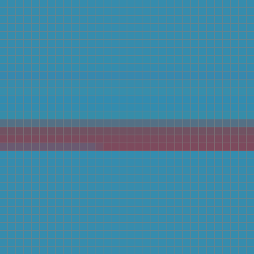
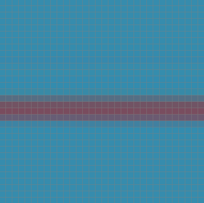
When the sample rate is fixed, bilinear pixel sampling gives better quality as it reduces jaggedness. When the pixel sampling method is fixed, supersampling gives better quality as mentioned in Part 2.
If the texture mapping has low resolution, nearest pixel sampling, and bilinear pixel sampling would look relatively similar since the bilinear interpolation of the four closest sample points to our coordinate will generate the same value as the closest sample point to our coordinate. On the other hand, if the texture mapping has high resolution, there will be a larger difference.
Part 6: “Level sampling” with mipmaps for texture mapping
Level sampling provides maps (textures) of different resolutions to choose from. At a high level, we choose a map based on whether we need to minify or magnify the texture (i.e., make it smaller or larger than its actual size, respectively). The largest texture is the original texture itself, while each after is a simplified, smaller version of the previous. This has various benefits, including saving computation time (we can sample from smaller textures in many cases), and preventing Moiré patterns. Though we typically don’t simply choose a map; doing so would make it obvious to the viewer when we switch from one level to the next. For this reason, we choose the two nearest levels and interpolate between them. The calculation for this level was based on the formula given in Lecture 5 and further verified in the OpenGL 4.5 specification. It is given below.
\[\log_2 \left(\max\left(\sqrt{\left(\frac{du}{dx}\right)^2 + \left(\frac{dv}{dx}\right)^2}, \sqrt{\left(\frac{du}{dy}\right)^2 + \left(\frac{dv}{dy}\right)^2}\right)\right)\]
The derivatives used in the calculation were obtained by making small increments in the \(x\) and \(y\) directions and taking the resulting change in \((u, v)\) coordinates. The approach used to turn the result of the above computation into a usable level differed based on the level sampling approach used. For example, we simply rounded when using the nearest level approach, but linearly interpolated between the nearest two levels when using the bilinear or trilinear level approaches. From here, we used one of the sampling methods as described in Part 5. For nearest level, we simply took the sample at that level; for bilinear or trilinear level, we took the weighted sum of the result of sampling at the two nearest levels. One important implementation detail was the need to to clamp the level between 0 and the maximum level. This matched our intuition and was confirmed by the OpenGL specification.
Tradeoffs between speed, memory usage, and antialiasing power between the three various techniques:
Speed: Pixel Sampling \(>\) Level Sampling \(>\) Supersampling
Pixel sampling only performs some calculations at the sampling points near the coordinate, so it should be the most performant. Level sampling needs to additionally find the level of mapping to use, so it will be slower than pixel sampling. Finally, supersampling would be the slowest as it could go all the way up to a sample rate of 16 in our case, and even higher in the industry, requiring significant amounts of computation per pixel
Memory usage: Supersampling \(>\) Level Sampling \(>\) Pixel Sampling
Pixel sampling only performs some calculations at the sampling points near the coordinate, so it doesn’t use too much memory. Level sampling needs to additionally find the level of mapping to use, so it will need more memory to store all maps of different levels. More specifically, it requires an additional one third of memory for each texture. Finally, supersampling would cost the most in terms of memory since it could go all the way up to a sample rate of 16 in our case, and even higher in the industry, which requires us to store information at up to 16 times more points.
Antialiasing power: Supersampling \(>\) Level Sampling \(>\) Pixel Sampling
Since we are theoretically not limited in our choice of sampling rate, super sampling provides a direct trade off between antialiasing power and speed/memory usage. This makes it the most powerful approach in this regard. It is followed by level sampling, which is stronger than pixel sampling due to its ability to make various improvements to image quality, including the prevention of Moiré patterns.
Rendering Result
We showcase the difference between the methods below. Notice the electrical lines as that is where the difference is most distinct. The pixel inspector is focused on the top of the left-most tree. We observe far less jaggies using bilinear sampling across both level methods.
texmap/my_test.svg with level 0, nearest pixel sampling.texmap/my_test.svg with level 0, bilinear pixel sampling.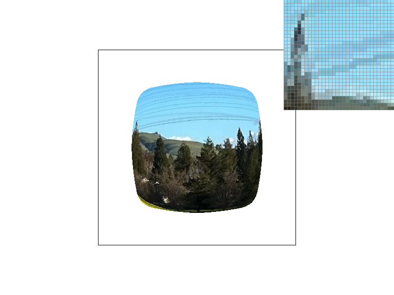
texmap/my_test.svg with nearest level, nearest pixel sampling.texmap/my_test.svg with nearest level, bilinear pixel sampling.Extra Credit: Summed Area Tables
We implemented summed area tables as an alternative sampling method based on the paper by Franklin Crow from 1984. We compare the results of the different methods below. All results were obtained at pixel sampling rate of 4.
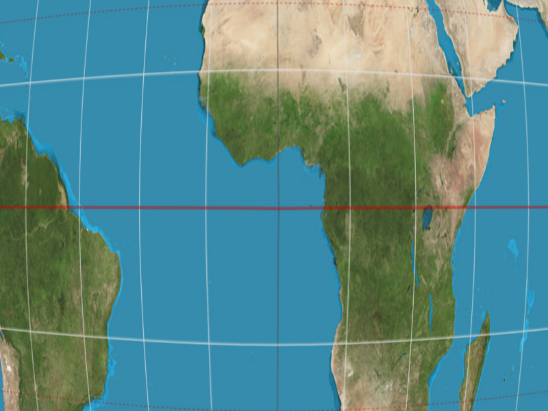
We observe that Summed Area Table sampling seems to produce a crisper image compared to the others at this sampling rate3. However, on careful inspection one can notice a rough textural pattern on the ocean (almost as if it was painted on a canvas) that is not present on the other images. This is present regardless of the sampling rate. We were unable to pinpoint the cause of this issue, but it is likely due to a subtle flaw in our implementation (rather than a a flaw of Summed Area Tables). For example, it could be related to how we calculate the bounding box on the texture associated with a pixel.
Extra Credit: Summed Area Tables - Performance Comparison
For the following comparison, we tested only the time taken to draw the SVG. In particular, we only timed the duration of the call to SVG::draw() in DrawRend::redraw(). The results are listed below. We see that the cost of greater memory usage (via the summed area table) provides signficant performance gains. It sits between nearest and bilinear in performance while providing higher image quality (discarding the subtle distoration due to our implementation flaw).
| Method | Sampling Rate (per pixel) | Time Elapsed (seconds) |
|---|---|---|
| Nearest | 1 | 0.00706412 |
| Bilinear | 1 | 0.00842444 |
| Trilinear | 1 | 0.0172887 |
| SAT | 1 | 0.00804278 |
| Nearest | 4 | 0.0211001 |
| Bilinear | 4 | 0.0297334 |
| Trilinear | 4 | 0.0609966 |
| SAT | 4 | 0.0256646 |
| Nearest | 9 | 0.0472816 |
| Bilinear | 9 | 0.0658713 |
| Trilinear | 9 | 0.136995 |
| SAT | 9 | 0.0548723 |
| Nearest | 16 | 0.079494 |
| Bilinear | 16 | 0.114779 |
| Trilinear | 16 | 0.201299 |
| SAT | 16 | 0.0880523 |
Footnotes
We saved the transformation, used various times throughout the function, in
transform; the original function recomputed the transformation on each use.↩︎Though this may add unneeded complexity. We did not observe input delays when undoing after adding many transformations.↩︎
If this isn’t obvious, pay attention to the dark green patch in the center of Africa. There is far more nuance in the Summed Area Table rendering compared with the others.↩︎